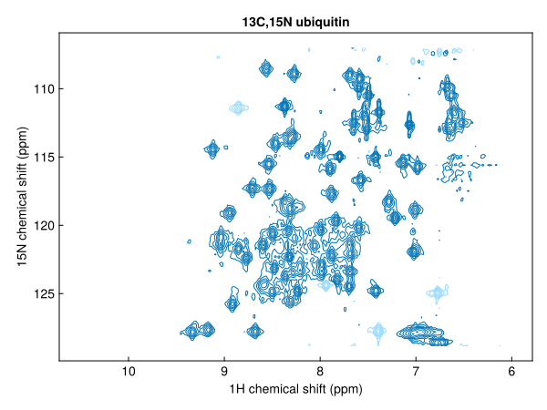
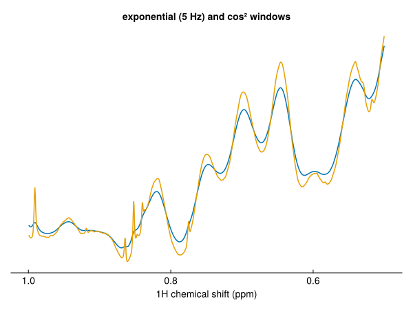
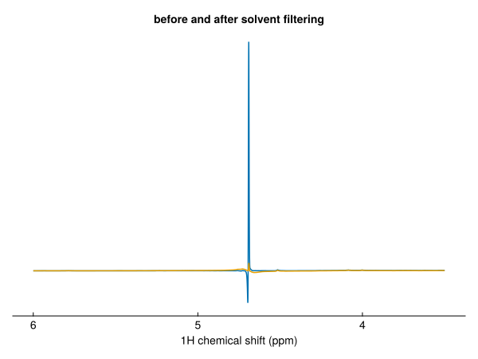
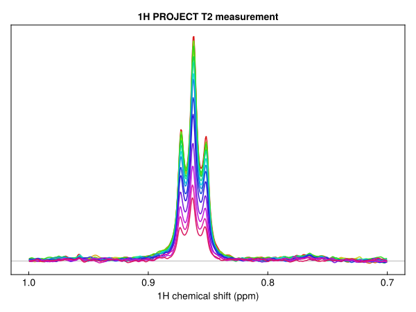

Process step by step
This page covers the processing functions one by one: what each does, its options, and how to apply it to one dimension of multidimensional data. For an introduction, see the tutorial Processing a 1D spectrum.
using NMRTools, CairoMakie
fid = exampledata("1D_1H"; fid=true)
fid2d = exampledata("2D_HN"; fid=true)The functions
| Function | Acts on | Effect |
|---|---|---|
apodize | time domain | multiply by a window function |
zerofill | time domain | append zeros (default: double the size) |
linearpredict | time domain | extend a dimension, or repair its first points |
solventfilter | time domain | remove a solvent signal |
ft | either | Fourier transform (inverse=true for the inverse) |
phase | either | zero- and first-order phase correction |
autophase | frequency domain | estimate and apply a phase correction |
extract | either | select a region in a pipeline, e.g. extract(F1Dim, 6.0 .. 10.0) |
realest | either | the purely real part, giving Float64 data |
Each function takes an NMRData and returns a new one. Called without data, each returns a function, so steps chain with |>:
spec = fid |> apodize(ExponentialWindow(5.0)) |> zerofill |> ft |> phase(F1Dim, 16.8, 0.0) |> realestEach also accepts a Dict of spectra and processes every entry.
Choosing dimensions
Without a dimension argument, apodize, zerofill and ft act on every Fourier dimension with the same settings, and autophase on every frequency dimension. linearpredict extends the indirect dimensions, and solventfilter acts on the direct dimension. Pass a dimension (by type or number) to act on one only, for example to use different windows in each dimension of a 2D:
spec2d = fid2d |>
apodize(T1Dim, Cos2Window()) |> apodize(T2Dim, CosWindow()) |>
zerofill |> ft |>
phase(F1Dim, -247.9, 218.4) |> phase(F2Dim, 90.0, -180.0) |>
realest
fig = nmrplot(spec2d[6 .. 10.5, :])
The phases here are those used to process this dataset in TopSpin; see Phasing below.
Window functions
apodize(spec, window) multiplies the FID by a window function. Without a window, the one recorded in the dimension's :window metadata is used. Common choices:
| Window | Use |
|---|---|
ExponentialWindow(lb) | line broadening of lb Hz; improves sensitivity |
Cos2Window() | cos², falls to zero at the end of the FID; a good default |
CosWindow() | cosine (sine bell shifted by 90°) |
SineWindow(...) | general sine bell |
GaussWindow(...), LorentzToGaussWindow(...) | resolution enhancement |
fig, ax, _ = nmrplot(realest(fid |> apodize(ExponentialWindow(5.0)) |> zerofill |> ft |> phase(F1Dim, 16.8, 0.0))[0.5 .. 1.0];
title="exponential (5 Hz) and cos² windows")
nmrplot!(ax, realest(fid |> apodize(Cos2Window()) |> zerofill |> ft |> phase(F1Dim, 16.8, 0.0))[0.5 .. 1.0])
See Window functions for every window and its parameters.
Zero-filling
zerofill(spec) doubles the size of each Fourier dimension. Pass factor for another multiple, and a dimension to zero-fill one dimension only:
size(zerofill(fid; factor=4)), size(zerofill(fid2d, T2Dim; factor=4))((65536,), (1024, 256))Solvent filtering
solventfilter removes a solvent signal from the FID before apodization. By default it acts on the carrier frequency; pass shift (ppm) to target another position. method=:lowpass (default) subtracts a low-pass filtered copy of the FID, the convolution difference method of nmrPipe's SOL. method=:hsvd fits and subtracts only the lines within a band around the target, which is slower but more selective.
filtered = solventfilter(fid)
fig, ax, _ = nmrplot(realest(fid |> apodize(Cos2Window()) |> zerofill |> ft |> phase(F1Dim, 16.8, 0.0))[3.5 .. 6];
title="before and after solvent filtering")
nmrplot!(ax, realest(filtered |> apodize(Cos2Window()) |> zerofill |> ft |> phase(F1Dim, 16.8, 0.0))[3.5 .. 6])
fid |> solventfilter(method=:hsvd) |> apodize |> zerofill |> ft
fid |> solventfilter(shift=4.75) |> apodize |> zerofill |> ftThe filter takes the digital-filter group delay into account, filtering the FID from t = 0.
autoprocess applies a solvent filter to ¹H spectra in H₂O (turn it off with solvent=false). The water signal's dispersion tails help automatic phasing, so autoprocess estimates the phase of a 1D spectrum before filtering, leaving out ±0.2 ppm around the water, and applies it to the filtered spectrum. To do the same by hand:
est = estimatephase(fid |> apodize(Cos2Window()) |> zerofill |> ft; exclude=[4.5 .. 4.9])
spec = filtered |> apodize(Cos2Window()) |> zerofill |> ft |> phase(F1Dim, est.p0, est.p1)
est.p0, est.p1(16.6188479224922, 0.4276711309468709)Phasing
phase(spec, dim, p0, p1) applies the phase θ = p0 + p1·n/N to point n (counting from zero at the left-hand, highest-ppm edge), in degrees. The sign and pivot match TopSpin's PHC0 and PHC1, so values can be copied between the two. Pass pivot (in ppm) to move the point at which only p0 acts.
Each call adds to the dimension's :phase metadata, the total correction applied so far:
spec2d[F1Dim, :phase](p0 = 112.10000000000001, p1 = 218.4)Automatic phasing
autophase estimates the correction and applies it, to every frequency dimension in turn unless a dimension is given:
auto = fid |> apodize(Cos2Window()) |> zerofill |> ft |> autophase
auto[F1Dim, :phase](p0 = 14.09351960805514, p1 = 2.1841559631632643)To see the estimate without applying it, use estimatephase. It returns the phases with a residual (the weighted rms phase error of the lines used, in degrees), the number of line groups used, and the groups left out of the fit:
unphased = fid |> apodize(Cos2Window()) |> zerofill |> ft
est = estimatephase(unphased)
est.p0, est.p1, est.residual, est.nlines(14.09351960805514, 2.1841559631632643, 7.979950270021072, 30)A large residual, few groups, or a strong rejected group indicates an unreliable estimate.
Useful options:
order=0fits the zero-order phase only, with the first-order phase fixed atp1(default 0). Once the digital-filter group delay has been removed, the first-order phase of the direct dimension should be close to zero, so this is often the more robust choice.p1andmaxdelayset the expected first-order phase and how far it may range. A first-order phase is a shift of the time origin, so the range is given as a timing uncertainty (default 20 µs) and converted with the spectral width.exclude=[4.6 .. 4.9]ignores lines in the given chemical-shift ranges, for example water or buffer.λsets how strongly the first-order phase is pulled towardsp1.
Multidimensional spectra
For multidimensional data, autophase(spec, dim) estimates the correction from 1D traces along dim through the strongest cross peaks, pooled into one fit. Each trace combines the components of the other dimensions so that it does not depend on how they are phased, and ridges such as t₁ noise from residual water are left out. For an indirect dimension, first-order phases of 0° and -180° (a first point half a dwell time after t = 0) are both tried.
auto2d = fid2d |> apodize(T1Dim, Cos2Window()) |> apodize(T2Dim, CosWindow()) |> zerofill |> ft |>
autophase
auto2d[F1Dim, :phase], auto2d[F2Dim, :phase]((p0 = 121.0515721045483, p1 = 199.24976689525838), (p0 = 95.12040755859283, p1 = -189.63339285543404))These are within about 10° (¹H) and 5° (¹⁵N) of TopSpin's phases for this dataset, (−247.9°, 218.4°) and (90°, −180°). The ¹H first-order phase is large, and the cross peaks span only 6–10 ppm, which constrains it less well than lines across the whole spectrum would. Check the result, and set phases known from the pulse sequence or from TopSpin with phase.
The estimate is logged at debug level; set ENV["JULIA_DEBUG"] = "NMRTools" to see it. The method is described in the autophase docstring.
Extracting a region
extract keeps a region of one or more dimensions in a pipeline, for example to discard empty parts of the spectrum:
amides = spec2d |> extract(F1Dim, 6.0 .. 10.5)
size(spec2d), size(amides)((2048, 128), (511, 128))extract(F1Dim => 6.0 .. 10.5, F2Dim => 105 .. 135) selects in several dimensions. Outside a pipeline, index the spectrum with a selector (spec2d[6.0 .. 10.5, :]); extract also gives the result its own metadata and refreshes its noise estimate.
Pseudo-2D series
In a pseudo-2D experiment, such as a relaxation series, only the direct dimension is Fourier transformed. loadfid loads the series axis as an unknown dimension (X2Dim), which the processing functions leave alone:
series = exampledata("pseudo2D_T2"; fid=true)
dims(series)(↓ T1Dim Sampled{Float64} -0.0063840000000000025:8.400000000000004e-5:1.3697880000000007 ForwardOrdered Regular Points,
→ X2Dim Sampled{Int64} 1:16 ForwardOrdered Regular Points)Process it as a 1D, then set the series axis with setrelaxtimes (or setgradientlist, setkinetictimes, setoffsets):
relax = series |> apodize(ExponentialWindow(2.0)) |> zerofill |> ft |> autophase |> realest
relax = setrelaxtimes(relax, acqus(relax, :vclist) * 4e-3, "s")
fig = nmrplot(relax[0.7 .. 1.0, :]; style=:flat)┌ Warning: autophase: strong lines left out of the fit, with their remaining phase error: 4.69 ppm (-85°), 3.76 ppm (-37°). They may have a genuinely different phase, or the first-order phase may be far from the expected value; pass `p1` (and `maxdelay`) to set it.
└ @ NMRTools.NMRBase ~/work/NMRTools.jl/NMRTools.jl/src/NMRBase/autophase.jl:528
autophase estimates the phase from the first spectrum of the series and applies it to all of them.
Real and imaginary parts
realest(spec) gives the purely real part of every point, real in every dimension. real and imag act elementwise as in MulticomplexNumbers, taking the coefficients of the highest-order imaginary unit: for 2D data real.(spec) and imag.(spec) are the parts real and imaginary in the indirect dimension, each still complex in the direct dimension. Individual components are available with component. See Multicomplex numbers and quadrature.